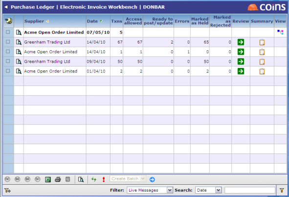
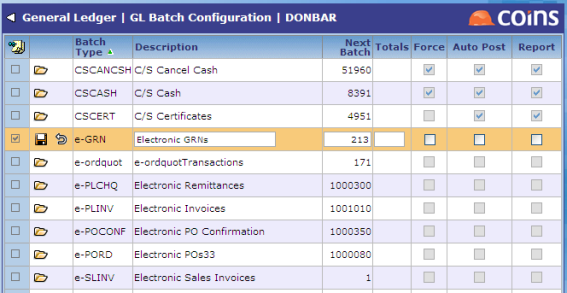

eInvoice Workbench
The OA Electronic Invoice Workbench allows you to process transactions that have been received into direct from the COINSetc Hub.
The transactions are sent by the COINSetc Hub as XML messages in a format that Electronic Invoice Workbench recognes. The Workbench interprets the messages and presents them in a regular fashion. A message may contain more than one transaction.
Transactions are routed to the Workbench in the correct , where the XML data is validated. If it is good, the transactions can be passed straight to the and General Ledger as a batch in the usual way. Transactions that do not pass validation can be amended in the Workbench. From the Workbench, the user can view an XML invoice as if viewing an image of a paper invoice. These images can be printed.
For certain configurations, costing can be added to invoices.
To process eInvoices:
- Go to Electronic Invoice Workbench.

This screen shows in bold the new messages that have been sent by and routed to the relevant .
- The original message in XML format can be seen by clicking the
 button.
button.
- If you have administration privilege, you can reject or load new messages:
- To load a message, use the Load action; this checks each invoice in the message for exceptions. If there are no exceptions in the message then you are prompted to pass them through to the or open the Review screen, the second page of the workbench, where the individual invoices that are carried by any one message can be seen and can be processed. If there are any exceptions the Review screen is opened straight away.
- To reject a message (whether reviewed or not), use the Reject action; rejected messages will not be passed into the workbench.
- Messages that have been reviewed but where not all invoices have been moved through to the are shown in normal text (not bold). Normal security is respected if being used, and the numbers in the columns indicate the number of invoices in the message and the number of invoices viewable to the logged-in user.
- A summary of the status of each invoice in the message can be seen by clicking the button.
- Click
 to open the Review screen and view the list of invoices pending processing.
to open the Review screen and view the list of invoices pending processing.
- To create a PL invoice batch, use the Create Batch action.
This invokes the standard batch creation program. When this process is complete a true PL batch of invoices is created from all invoices not held back in the workbench and without an exception flag. The invoices will then be cleared from the workbench leaving only those purposely held or those that require further attention to resolve any exceptions. When all invoices in a message have been moved to the , the message is no longer visible in the workbench.
Configuration
If the PL parameter AUTOPSTE is set to Y (or the PL parameter AUTOPSTE is blank and AUTOPOST is set to Y), the invoices are placed on the invoice register; otherwise, an unposted batch of invoices is created to be dealt with later in the .
Batch numbering
Batch numbering is required for each 'e' document type. Set the batch numbers in GL Batch Configuration. Each document type needs to be amended by putting a number into the Next Batch column; the system informs you if the number is high enough for a 'start' point. All flags may be left uned.
